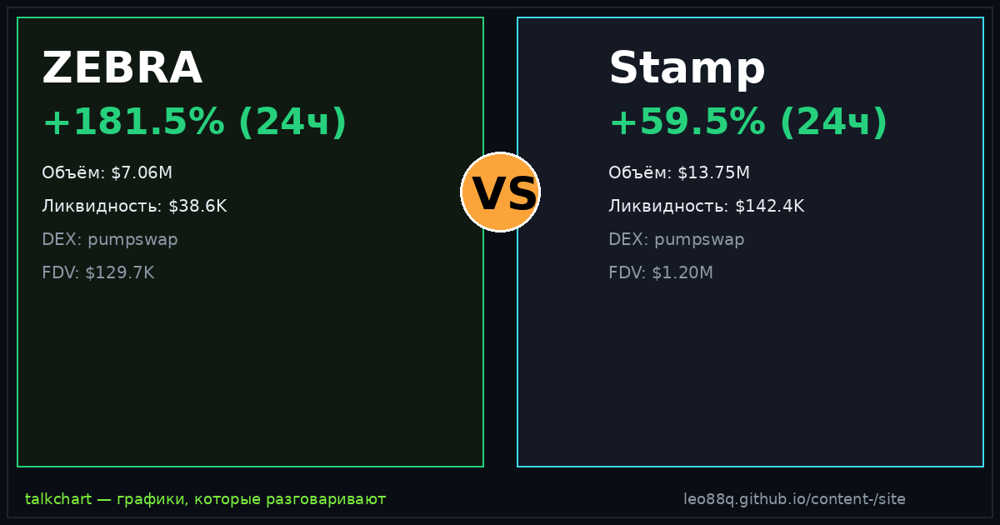

📈 TalkChart · каталог баттлов · [md для AI]
Срез данных: 2026-09-21 14:55 UTC · сеть Solana DEX

По ончейн-метрикам TalkChart: ZEBRA опережает по ценовому импульсу (+181.5% против +59.5%). Кроме того, у Stamp более надёжная ликвидность ($142.4K против $38.6K). Краткосрочный фаворит по совокупности факторов: Stamp.
| Параметр | ZEBRA | Stamp | Лидер |
|---|---|---|---|
| Суточный рост (24ч) | +181.5% | +59.5% | ZEBRA |
| Объём 24ч | $7.06M | $13.75M | Stamp |
| Глубина пула (TVL) | $38.6K | $142.4K | Stamp |
| Отношение Объём / TVL | 183.1× | 96.6× | — |
| DEX биржа | pumpswap | pumpswap | — |
| Адрес пула | 8WormohZ… | Bgf45Fjq… | — |
По ончейн-метрикам TalkChart: ZEBRA опережает по ценовому импульсу (+181.5% против +59.5%). Кроме того, у Stamp более надёжная ликвидность ($142.4K против $38.6K). Краткосрочный фаворит по совокупности факторов: Stamp.
У ZEBRA суточный объём $7.06M при ликвидности $38.6K. У Stamp объём $13.75M при ликвидности $142.4K.
ZEBRA показал +181.5% за сутки, в то время как Stamp изменился на +59.5%.
Сгенерировано фабрикой контента TalkChart. Обновляется каждые 4 часа. Не является финансовой рекомендацией.